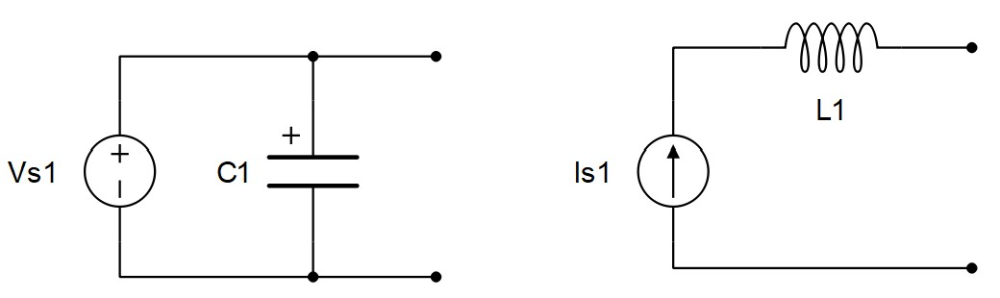
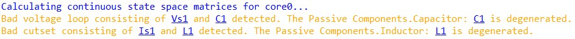
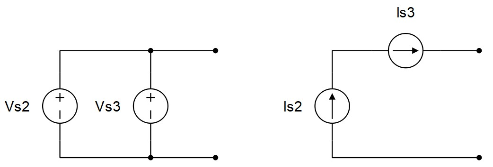
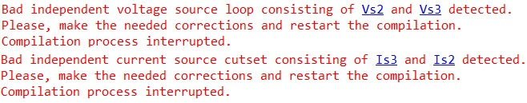
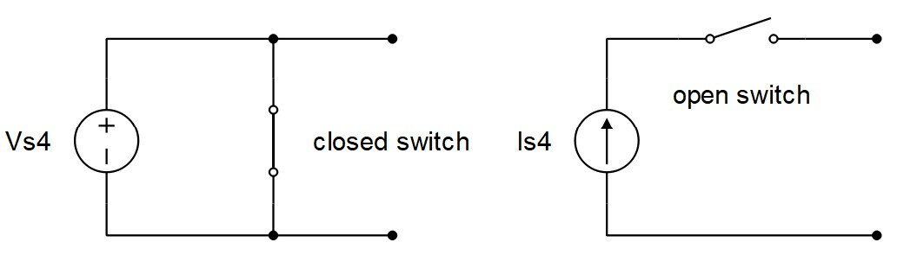
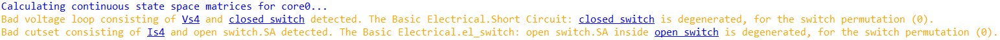

Topological Conflicts
This section describes topological conflicts
Topological Conflicts
Topological conflicts in the circuit are: state degenerations and source degenerations. These conflicts are hard to analyze and to simulate. In most cases, as a result of circuit analysis, an infinite current/voltage can occur.
State degenerations are degenerated capacitances and inductances in the circuit. A capacitor connected in parallel with a voltage source is degenerated in Figure 1. An inductor connected in series with a current source is degenerated in Figure 1.
In real time/VHIL simulation, degenerated capacitors and inductors are replaced by resistors with a resistance value equal to the specified value of capacitance or inductance, respectively.
In TyphoonSim, topological conficts give rise to high-index DAEs, which are numerically challenging to solve. To address this issue, high-index DAEs are converted into index-1 DAEs using commonly used index-reduction techniques by differentiating the hidden algebraic constraints associated with the degenerated capacitors and inductors [1].


There are two types of source degenerations: Direct degeneration of independent sources and direct degenerations of independent sources with zero sources. Zero sources are open and closed switches. If ideal switches (Ron = 0, Roff = inf) are used, an open switch is a current source with zero current, while a closed switch is a voltage source with zero voltage.
Direct degenerations of an independent voltage source, as shown in Figure 3, cannot be resolved. Compilation of such circuits will fail and an error report will be printed out.


In real time/VHIL simulation, degenerations of independent sources with zero sources (open and closed switches), shown in Figure 5, will be automatically solved as follows: a closed switch connected in parallel with a voltage source will be treated as an open switch, while an open switch connected in series with an independent current source will be treated as a closed switch. In other words, closing a switch that is connected in parallel with an independent voltage source has no effect, and opening a switch connected in series with an independent current source has no effect on the circuit. In case of these types of degenerations, a warning message will be generated during compilation.
In TyphoonSim, if ideal switches (Ron = 0, Roff = inf) are used, degenerations of independent sources with zero sources (open and closed switches), shown in Figure 5, will fail and an error report will be printed out. On the other hand, if switches are modelled as variable resistors (Ron > 0, Roff < inf), then, no simulation failure is expected to occur.


Sometimes degenerations of the type shown in Figure 6 can occur in regular circuits in real time/VHIL simulation when a coupling component is inserted. In these cases, a correct snubber or shunt circuits have to be used.
References
- S. E. Mattsson, and G. Söderlind, Index Reduction in Differential-Algebraic Equations Using Dummy Derivatives, Technical Report, TFRT-7477, Department of Automatic Control, Lund Institute of Technology, 1991